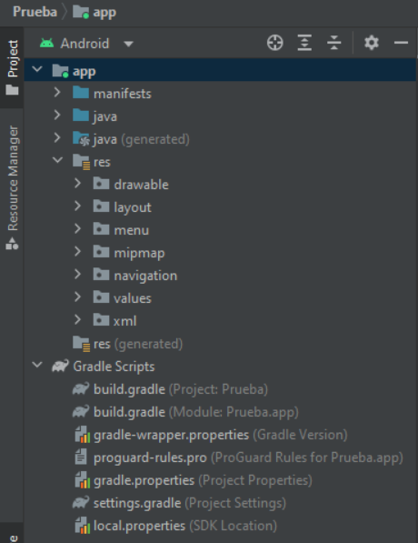

Como hemos comentado anteriormente, los módulos contienen los archivos de código y los recursos que componen la aplicación. En función del tipo de módulo, podemos encontrar diferentes carpetas que organizan el contenido. Los más relevantes son:
{kind=link}
- Java: contiene el código de la aplicación tanto en lenguaje Java como en Kotlin. Dentro del código podemos encontrar las clases de controladores, funciones e incluso las pruebas unitarias, todo ello organizado en paquetes Java.
- Res: dentro de este módulo encontramos aquellos archivos referentes al diseño de las pantallas, traducciones de textos, estilos, gráficos e imágenes que componen la aplicación. Este módulo se divide en carpetas para organizar el contenido y que sea fácilmente localizable. Según el tipo de recurso, encontramos las siguientes:
- drawable: almacena recursos del tipo imágenes o gráficos en diferentes formatos (PNG, JPG, BMP, etcétera) o vectoriales en formato XML.
- layout: encontramos los ficheros que definen el diseño de las pantallas de la aplicación, en formato XML.
- values: en esta carpeta tenemos varios ficheros que almacenan los estilos y códigos de colores usados en la aplicación, así como los textos que se utilizan en la aplicación para su posterior traducción.
- minimap: contiene los archivos gráficos del icono de la aplicación, podemos ver que existen varios en función de la resolución de pantalla del dispositivo donde se ejecute la aplicación.
- Manifests: encontramos el archivo AndroidManifest, en este archivo se definen la configuración y otros aspectos de la aplicación que estamos desarrollando, así como los permisos que utilizará el dispositivo.
- Gradle Scripts: esta sección agrupa los ficheros necesarios para la compilación de la aplicación, en la que podemos encontrar al menos dos: uno para la compilación del proyecto y otro para cada módulo que contenga el proyecto.
Estos ficheros los veremos con mayor detalle en los siguientes capítulos, donde hablaremos de la fase de compilación.